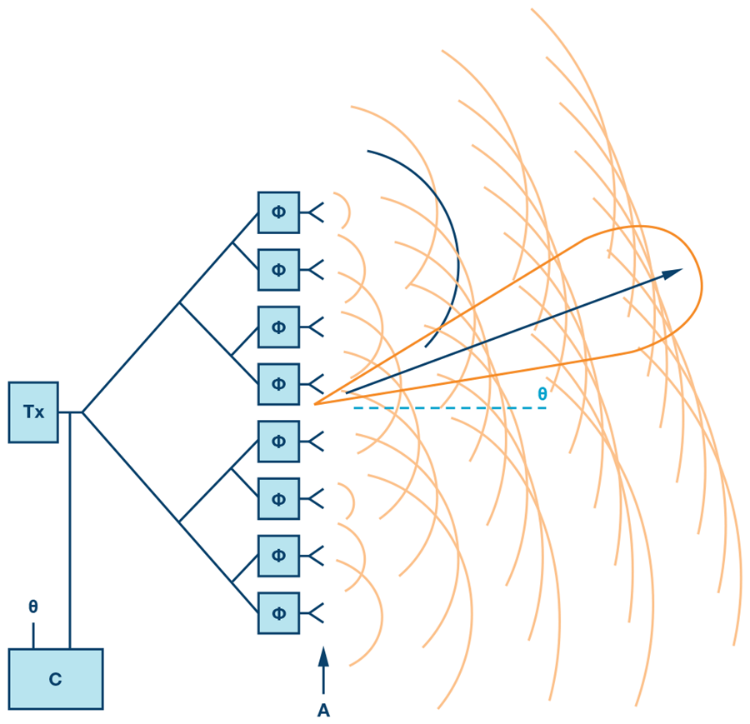

Objective 3.3#
LO# |
Description |
|---|---|
3.3 |
I can calculate the signal wavelength, antenna size, max antenna gain, and basic gain pattern for dipole, monopole, and parabolic dish antennas. |
Antennas Introduction#
Generically, we can divide electronic communications into four steps:
Preparing the message for transmission using an input transducer, signal conditioning, and modulator
Sending the signal through a communications medium
Receiving the signal from the communications medium
Recovering the message using a receiver interface, demodulator, and transducer

In previous lessons, we learned about steps 1 and 4. We prepare the message by converting the information to an electrical signal, conditioning the signal, filtering, and/or digitizing, then modulating the signal for transmission. Likewise, we recover the message by demodulating and employing optional signal conditioning techniques, such as converting to analog, amplifying, and/or filtering, before we send it to an output transducer.
In the remaining lessons, we will focus on wireless communications. As we do so, we will use radio communications and RADAR as examples. We will then explore how this process affects our tactics by taking a look at Electronic Warfare (EW) techniques. But first, we will look at how we transmit a signal wirelessly with an antenna.
General Antenna Theory#
Coulomb’s Law states an electric force exists between a stationary positive charge and a stationary negative charge. Since the electric field is just the force per unit of charge, the electric field pattern in the following figure can be found by knowing the direction of force on a positive test charge placed in the vicinity of the two fixed charges. The arrows indicate the direction of force on a positive test charge, if one existed. Since positive test charges follow the direction of electric field lines and negative charges behave in the opposite manner as positive test charges, we know that negative charges must move in the direction opposite of the arrows on the electric field lines.
In this case, the charges are stationary. However, Ampere’s Law states that if the charges move along a conductor (such as a wire or a sheet of metal), these moving charges (current) generate a magnetic field around the current. The charge separation causes an electric field, and the current causes a magnetic field. Together, we call these interdependent fields an electromagnetic field, which radiates away from the conductor in waves, much like ripples from a stone thrown in a pond. But instead of the two-dimensional rings in the pond, the electromagnetic waves radiate outward in three-dimensional spheres. The radiation of electromagnetic waves can be explained well with a specific type of antenna called a dipole antenna, which will be discussed in more detail later in this reading. Consider a dipole antenna made out of two wires as shown in the figure below.
Recall that oppositely charged particles attract and similarly charged particles repel one another. Recall also that metals easily give up electrons, which can create areas of positive charge (when electrons have departed) and negative charge (when electrons accumulate).
When we apply a voltage across the input of this antenna, we cause similarly charged particles to accumulate together:

Therefore, in the bottom half of this antenna, the input, which is the negative terminal of \(V_{in}\), pushes the electrons in the lower wire away, causing an accumulation of negative charge at the bottom of the antenna. Similarly, in the top half of the antenna, there is a positive charge at the input, which draws electrons in the wire towards the input, leaving behind an area of positive charges at the tip of the antenna (we can denote positive charge as the absence of electrons). The result is an area of positive charges at one tip of the antenna and an area of negative charges at the other. The difference in charges between the two ends of the antenna creates an electric field, labeled E in the above diagram.
Now what happens if we were to put another antenna inside this electric field?

In the diagram above, the antenna we applied a voltage to is on the left, and the new antenna is on the right. As discussed earlier, the arrows on electric field lines tell us the direction of force on a positive test charge, and from this, we know that electrons will move in the opposite direction of the arrows. For this reason, the electric field, E, created by the antenna on the left moves electons to the top portion of each half of the antenna on the right, creating an area of negative charge at the top of the upper half and an area of positive charge at the bottom of the lower half. Another way to think about this is about how charges attract and repel. The arrows in an electric field originate from an area of positive charge, and they end in an area of negative charge. The positive charge at the top of the electric field draws electrons to the top of the new antenna. Likewise, the negative portion at the bottom of the electric field pushes the electrons away, leaving behind an area of positive charges in the new antenna.
In order for an electric field to propagate (move), the input needs to change over time. One way we can get it to change is by applying an alternating current, such as a sinusoidal signal, to the input.
Therefore, when the input signal reverses polarity, the electric field is reversed. We now have negative charges at the top of the transmitting antenna and positive charges at the bottom.
In the receiving antenna, the opposite occurs. Positive charges accumulate at the top of the receiving antenna and negative charges accumulate at the bottom.

Therefore, as our input signal from the transmitting antenna changes from positive to negative, the output signal at the receiving antenna changes from negative to positive. This is how antennas transmit information!
This also demonstrates an important concept about how antennas radiate electromagnetic radiation. The electric field travels perpendicular to the antenna, and the electric field points parallel to the antenna. In order for the electric field to move the charges in the receiving antenna, the receiving antenna has to be placed parallel to the incoming electric field (as is shown in the image above). For this reason, antennas do not work well when the tips are pointing at each other.
We could just as easily have made the antenna on the right the transmitting antenna (connected to \(V_{in}\)) and the antenna on the left the receiving antenna (connected to \(V_{out}\)). Because of this, there is no difference between a receive antenna and a transmit antenna. If an antenna can be used to transmit, it can also be used equally well to receive.
Types of Antennas#
There are many types of antennas, but we will discuss four main types: the dipole, monopole, parabolic dish, and array antenna.
Dipole: The basic dipole is one of the most common types of antennas. Its radiation characteristics, simplicity of deisgn, and ease of construction make it useful for a wide variety of applications. Although there are many types of dipoles, the most common type of antenna is the half wavelength dipole (also know as half-wave dipole), where the length of the antenna is given by:
In the above equation, λ is the wavelength of the electromagnetic wave that the antenna is designed to transmit and/or receive. In calculating the length of antennas, it is useful to recall the relationship between wavelength (λ) and frequency:
The following example illustrates how to calculate the length of a half-wave dipole.
Example Problem 1: The carrier frequency of an FM broadcast station is 100.7 MHz. How long of a dipole antenna should we use to receive this signal?
Understand: The length of the antenna is inversely proportional to the frequency of the signal.
Identify Key Information:
Knowns: We know the broadcast frequency (100.7 MHz).
Unknowns: The wavelength and the length of the dipole antenna.
Assumptions: None.
Plan: A dipole antenna is half of a wavelength, so we need to calculate the wavelength and then divide the wavelength by 2.
Solve: To find the wavelength of a signal, we use the following equation:
Therefore, this signal has a wavelength of just under 3 meters. A half-wave dipole antenna is one half of the wavelength of the signal. Therefore,
Answer: The dipole antenna needs to be 1.490 m (4.6 ft) long. Many cars embed a dipole antenna in the car window to receive FM signals. These antennas are roughly 1.5 meters in length (or just under 5 feet) to maximize reception of the frequencies used for FM stations.
Monopole: Another very common antenna is the quarter-wave monopole. As its name suggests, the length of a quarter-wave monopole is equal to one-quarter of the wavelength it is designed to transmit or receive. In order for a monopole antenna to work, it needs to have a reflective surface called a ground plane. This ground plane acts like a mirror to the electromagnetic field, which reflects the “mirror image” of the incident electromagnetic field. Then, the field from the top half and “mirror image” from the bottom half interfere constructively, meaning they add together. Using this phenomenon, the ground plane “fools” the quarter-wave monopole into behaving like a half-wave dipole.
The radiation characteristics of the quarter-wave monopole are the same as that of the half-wave dipole from the ground plane up. Radio antennas mounted on cars are monopoles. This antenna works the same as if the sheet metal of the car under the antenna, functioning as the ground plane, were replaced by the bottom half of a half-wave dipole.
Example Problem 2: The carrier frequency of an FM broadcast station is 100.7 MHz. How long of a monopole antenna should we use to receive this signal.
Understand: We are recalculating the previous example problem using a monopole antenna to broadcast. However, since a monopole is half the length of a dipole, we know the monopole length will be shorter than the dipole.
Identify Key Information:
Knowns: We know the broadcast frequency (100.7 MHz).
Unknowns: The wavelength and the length of the monopole antenna.
Assumptions: None.
Plan: Since we calculated the wavelength of this signal in the problem above, we can start from there and divide by 4 to calculate a quarter of a wavelength. The antenna length is therefore:
Answer: The required length of a monopole antenna is 744.8 mm. The antennas that you see sticking out of car hoods are monopoles. 744.8 mm is about 2.5 feet, which is the approximate length of car antennas.
Example Problem 3: An AM radio station transmits at 740 kHz. If the station broadcasts using a monopole antenna, how tall should the antenna be?
Understanding: A monopole antenna needs to be 1/4 of the wavelength.
Identify Key Information:
Knowns: We know the broadcast frequency (740 kHz).
Unknowns: The wavelength and the length of the monopole antenna.
Assumptions: None.
Plan: We will use the same process as before, calculating the wavelength of the signal and then dividing it by 4.
Solve: Calculating the wavelength of this signal:
Recognize how large this wavelength is. In fact, the wavelength for this signal is more than 4 football fields long. Even with a quarter-wave dipole, the required antenna height is still:
Answer: A monopole antenna broadcasting a 740 kHz signal needs to be 101.4 m (332.7 ft) tall.
Remember a monopole antenna requires a ground plane in order to work. For an AM monopole antenna, the ground itself is used as the ground plane (sometimes metal bars are buried in the dirt to increase the reflectivity).
You might also wonder about the answer to the above question. If we need such a long transmission antenna, we need an equally long receiving antenna, which is impractical for many space-limited applications. Fortunately, there are some convenient ways to make antennas more usable. In fact, many AM antennas are not just one length of wire. Instead, a typical AM antenna is actually a thin copper wire wrapped around a frame hundreds of times. This wrapping allows us to create a necessarily long antenna while conserving space.
Parabolic Dish: A parabolic dish antenna (shown below) focuses signals in a specific direction, which allows them to travel farther. Recall that a parabola focuses parallel rays to its focal point. The actual antenna element, called the feed, is usually a dipole or horn antenna placed at the focal point. The feed acts as either a collector (receiver) or emitter (transmitter) for the antenna. In the receiving case, the feed collects all the rays focused by the parabolic reflector dish. In this way, the antenna can capture much more of the energy than just the feed antenna by itself. However, this is limited to a very small spatial area. In the transmitter case, the feed directs the energy towards the dish, where the energy is then focused in the direction the antenna is pointing. Note spherical and parabolic antennas are very similar but differ slightly in the way they focus energy.
Antenna Parameters#
In what directions do antennas radiate energy and how much energy do they radiate in each direction? In what directions do antennas transmit or receive energy and how much energy do they transmit or receive in each direction? Thankfully, the concepts are the same whether the antenna is transmitting or receiving. In order to answer these questions, we graph the radiation patterns of an antenna. This provides a pictorial representation of the amount of energy the antenna radiates (or receives) in all directions for some arbitrarily chosen fixed distance. Consider once again the dipole antenna. If we want to know how much relative power is radiating in all directions from the antenna, we can create a radiation pattern graph.
Consider what would happen if we placed the dipole vertically and walked around the dipole in a circle, keeping our distance to the antenna constant. In this case, we would find all of the received power measurements are equal. So the radiation pattern around the axis parallel to the orientation of the dipole would be a circle as shown in Figure 1. For the radiation pattern, the outward distance from the center of the dipole represents power and not distance in meters. Therefore, if the radiation pattern is closer to the antenna, less power is being radiated in that direction.
Next, we can place the dipole antenna in a horizontal position walk around it in a circle while taking power measurements. The radiation pattern for this case is shown in Figure 2. We see the maximum power radiates from the two points on the circle farthest away from the side of the antenna. We also see no energy radiates off the end, where there is a null in the pattern. In addition, as we go from the null to the maximum on the circle, the energy gradually increases.
Figure 1: Vertical dipole radiation pattern |
Figure 2: Horizontal dipole radiation pattern |
|---|---|
|
|


Combining the radiation patterns shown above, the three-dimensional radiation pattern is shaped as a toroid, the shape of a doughnut, as shown in Figure 3. This radiation pattern explains why you never point the top of a radio antenna in the direction from which you are trying to receive signal. Instead hold the radio upright so the entire length of the antenna can capture radiation.

Figure 3: 3-D radiation pattern for a simple dipole antenna.
A parabolic dish has a different radiation pattern because of its ability to focus radiation in one direction. The pattern is narrower and longer as shown below. This means a parabolic dish radiates and receives extremely well in a specific direction at the expense of poor performance in every other direction.

Antenna gain refers to the antenna’s ability to focus energy in a specific direction. You might be familiar with flashlights that can focus the light beam by turning the head of the flashlight. As the beamwidth becomes narrower, the light intensity becomes brighter. The brightness of the bulb is constant; however, as the light from the bulb is focused, it can be concentrated into one direction. In antenna terminology, we would say the brighter, narrower beam has more gain.
Antenna gain is defined as the ratio of the energy focused in a direction as compared to a standard. The standard is a radiating point source, which is simply an antenna that radiates equally in all directions. This is called an isotropic source and is only a theoretical concept. The 3-D radiation pattern from a point source is simply a sphere, meaning it radiates energy equally in all directions. If the antenna does nothing to focus energy in a specific direction, its gain is simply one.
When we compare the radiation pattern of a dipole antenna (two circles in the figure below) to that of a point source (grey circle in the figure below), we find the dipole antenna has more power radiated in some directions than the point source (Gain > 1) while in some directions, no power is radiated (Gain = 0 or a null zone).
Both the dipole and monopole have modest gain. Ideally, a half-wave dipole has a gain of G = 1.64. The quarter-wave monopole ideally has twice the gain of a half-wave dipole (G = 3.28). However, this is only true if the monopole is directly over a perfectly conductive ground plane that extends to infinity, which is rarely the case.
Since gain is typically a power ratio, it is usually discussed in terms of the ratio of the actual antenna power pattern gain compared to the power pattern gain of the point source. As stated above, this ratio is 1.64 for a half-wave dipole. We can also relate this in terms of decibels, or dB using the following relationship:
Remember, dB is a power ratio.
In contrast to a dipole or monopole, a parabolic dish antenna would typically have a gain ranging from hundreds to even thousands of times that of a point source and depends on both how the dish is built and the frequency of the transmitted signal. We can calculate the gain of a dish antenna using the following equation:
In this equation, r is the radius of the circular dish (in meters), λ is the wavelength of the transmitted signal (in meters), and η is the efficiency of the antenna.
Example Problem 4: A dish antenna with a radius of 250 mm is used to send a microwave communication signal at 2.7 GHz. The dish has an efficiency of 91%. What is the antenna’s gain?
Understand: A dish antenna has a high gain, but this gain depends on the relationship between the radius of the dish and wavelength of the transmitted or received signal.
Identify Key Information:
Knowns: We know the radius of the dish, the efficiency, and the frequency.
Unknowns: The wavelength and gain of the antenna.
Assumptions: None.
Plan: Since we have the dish’s radius and efficiency, we can calculate its gain for 2.7 GHz transmission using the gain equation. But first, we should calculate the wavelength.
Solve: The wavelength of the transmitted signal is
We can now calculate the gain:
Answer: The dish’s gain is 181.9.
Phased Array Antennas#
Now that we have discussed the three basic types of antennas and their associated parameters, it is worth looking at one more type of antenna – the phased array antenna. Although dish antennas focus their energy in one direction, one of their drawbacks is the need to physically turn the antenna in the direction of the corresponding transmitter or receiver. However, it is possible to construct an array of antennas to create an electronically controlled beam. Consider the arrangement of transmitting antenna elements shown in Figure 4, where 8 antenna elements are connected to a single transmitter/exciter. In this case, the direction of the combined beam appears to be moving at some angle θ off the “straight ahead” direction (boresight). To do this, each radiating element (antenna) is progressively delayed in phase (which is really just a time delay). For Figure 4, this delay increases as we move up the chain of antennas. Recall that as waves propagate, they spread out spherically. Therefore, by introducing this progressive delay, the peaks, or strongest parts of the waves, interfere constructively. The peaks of the overall wave from the array antenna define the direction the beam appears to be propagating. As such, the beam appears to be moving away from the array at the desired angle θ. Therefore, we can change the angle by changing the time delay between each element.

Figure 4: A phased array of antennas elements.
Taking advantage of this abilty to change the direction of the “beam” by changing the time delay of the antenna elements allows us to build a completely flat antenna. Many modern antennas in aircraft, satellites, and other weapon systems use such phased array technology. One example is the Northrop Grumman AN/APG-83 Scalable Agile Beam Radar (SABR) used in the nosecone of the F-16 (Figure 5). Technology in the area of phased arrays has improved such that we can realize relatively high gain antennas and also steer the beams in both azimuth and elevation (2-D steering).

Figure 5: The AN/APG-83 SABR installed in the nosecone of an F-16.